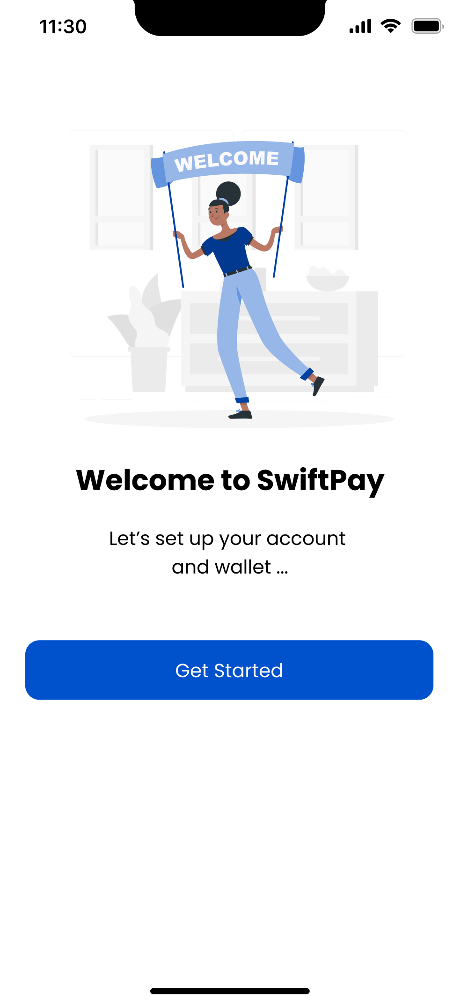

SwiftPay Fintech Dashboard
User-centered financial dashboard simplifying complex payment tracking and account management

Overview
Users needed an intuitive, reliable platform to manage payments, track transactions, and connect with financial services. Existing solutions were often cluttered or confusing, making financial management stressful and inefficient.
The Problem
Financial dashboards felt cluttered and confusing, making payment tracking and account management stressful.
The Goal
Create a clean, intuitive dashboard that simplifies financial tasks through clear hierarchy and micro-interactions.
User Research
I conducted user interviews and competitive analysis to understand pain points in existing financial platforms.
Key Insights
- Users felt overwhelmed by too much information on dashboards
- Transaction tracking was confusing without clear categorization
- Payment flows had too many steps, causing friction
- Users wanted confidence in their financial actions

Design Process
Wireframing & Information Architecture
I created wireframes focused on simplifying complex financial data. The goal was to establish clear visual hierarchy and intuitive navigation.

Visual Design & Micro-interactions
I designed a clean, professional interface with subtle micro-interactions that provide feedback and build user confidence. Key features include:
- Clear transaction categorization and filtering
- Streamlined payment flows with progress indicators
- Consistent visual feedback for user actions
- Accessible color contrasts and typography
Results & Impact
- Streamlined workflows for payments, transactions, and account management
- Improved clarity and usability for complex financial data
- Established consistent design system for future features
- Interactive Figma prototype ready for testing and developer handoff
"The dashboard makes tracking my finances actually enjoyable. Everything is where I expect it to be."
View Prototype
Explore the interactive Figma prototype:
Open in Figma